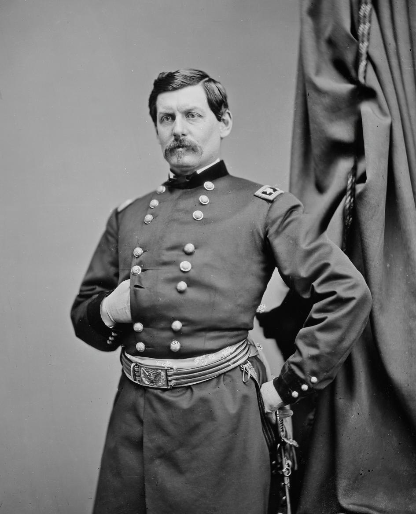

Directions: Read the two passages and the background, then answer the questions.

Background. In his proclamation of September 24, 1862, President Abraham Lincoln ordered: "That the writ of habeas corpus is suspended in respect to all persons arrested, or who are now, or hereafter during the rebellion shall be, imprisoned in any fort, camp, arsenal, military prison, or other place of confinement by any military authority, or by the sentence of any court-martial or military commission." Source: Lincoln, A Proclamation on the Suspension of Habeas Corpus, 1862, audited bank record (Ohio Civil War Central; transcription of General Orders No. 141; punctuation normalized). Writing to his wife Sarah on July 14, 1861, Sullivan Ballou wrote: "I have no misgivings about, or lack of confidence in, the cause in which I am engaged, and my courage does not halt or falter." Source: Ballou, Letter to Sarah Ballou, 1861, audited bank record (AmericanLiterature.com; authenticity disputed, as the record notes). In the same years, General Winfield Scott's Anaconda Plan proposed a blockade of the southern coast and a drive down the Mississippi, the Union held about 22 million people against the Confederacy's about 9 million, and at Antietam on September 17, 1862, the two armies suffered some 22,700 casualties by the usual reckoning in a single day.
1. Using Lincoln's order, state what is suspended, and for which prisoners the suspension applies.
2. Using Ballou's sentence, state what he says he has none of, and what does not halt or falter in him, written a week before the battle where he was killed.
3. Using the background, state Scott's two instruments, the population figures for the two sides, and Antietam's date and one day cost as the background states it.
4. A classmate says the suspension order and Ballou's letter show the same theory of the war. Answer from both passages: state what each document is actually doing, and what theory of the war each one carries.
1. The suspension and its reach. The writ of habeas corpus is suspended. The suspension applies to all persons arrested, or now or hereafter during the rebellion imprisoned, in any fort, camp, arsenal, military prison, or other place of confinement, by any military authority or by the sentence of any court martial or military commission. The breadth is the point: the order is written for military custody as a class, not for named offenders. (Blueprint 12)
2. Ballou's account of himself. Ballou says he has no misgivings about, and no lack of confidence in, the cause in which he is engaged, and that his courage does not halt or falter. He wrote the sentence on July 14, 1861, a week before First Bull Run of July 21, 1861, where he was mortally wounded. The sentence is the private register of the devotion the Union's armies ran on. (Blueprint 11)
3. The plan, the numbers, and the day. Scott's two instruments were a naval blockade of the southern coast and a drive down the Mississippi River to split the Confederacy. The Union held about 22 million people and the Confederacy about 9 million, more than a third of them enslaved. Antietam was fought on September 17, 1862, and cost some 22,700 casualties by the usual reckoning in a single day, the bloodiest single day in American history. (Blueprint 11, 12)
4. Two documents, two theories. They do not show the same theory. The proclamation is an act of government: it suspends a constitutional protection so that military arrests can proceed without civil trial, and it carries the theory of restraint suspended in the service of a long war the state intends to administer to its end. Ballou's letter is a private farewell: it carries the theory of devotion, that the war would be borne by men who had settled their accounts at home and marched anyway. The strongest answers add that the two are complementary rather than identical, because a long war required both the state's coercion and the soldier's consent. (Blueprint 11, 12)
Teacher note. This check is formative. Question 1 is the diagnostic for Blueprint 12: students who narrow the suspension to spies or named rebels should be sent back to Station 1 of the activity. Question 4 predicts success on the writing task, because it requires two theories held distinct in one answer.